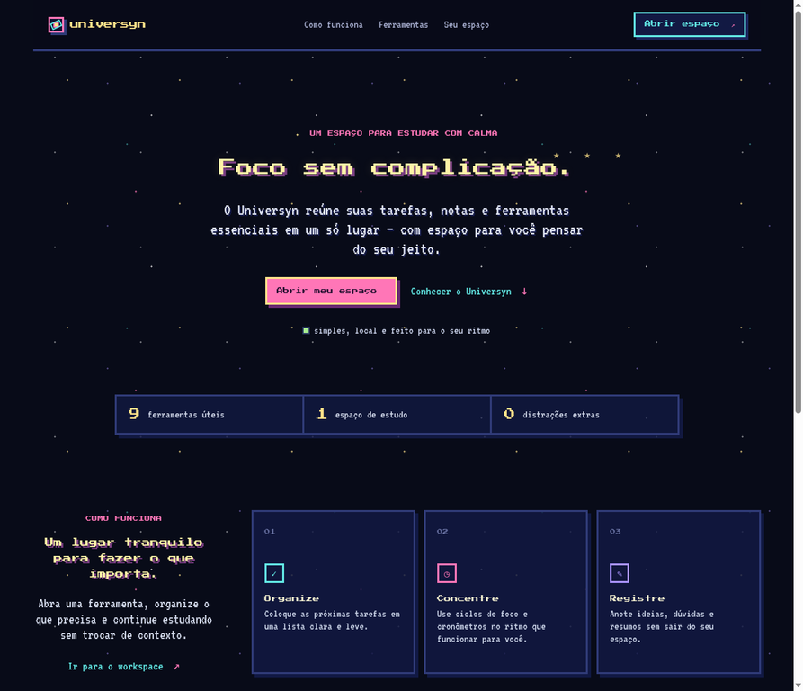

LIVE PREVIEW01 / PROJETO PESSOAL · WEB
↗Universyn
Um espaço de estudo que reúne tarefas, notas e ferramentas essenciais em uma experiência calma e personalizável.
Meu papel
Concebi a landing page e a experiência do workspace, pensando em foco, organização e baixa fricção para estudar.
Ver código no GitHub ↗